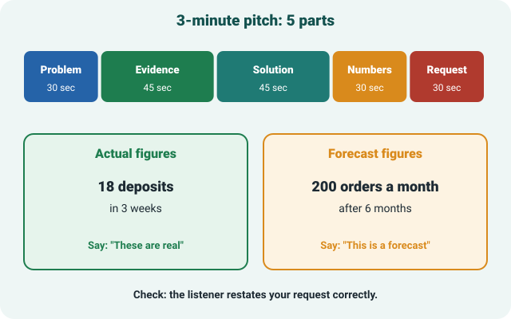

K2 · Speaking and writing clearly › Level 3 Secure
Tell your story to win resources: the 3-minute pitch
This lesson completes Sheet 7: 3-minute pitch script. Print template. The pitch uses figures from Sheets 2 and 4. Persuading without a title is covered in Persuade without authority (N4).
1. Objectives
- Write a 3-minute pitch in 5 parts, ending with a specific request.
- Check the pitch: the listener can restate your request; actual figures are kept apart from forecasts.
2. Retrieval warm-up
- Why describe a job as 90-day results?
- In Vietnam, from what contract length is social insurance compulsory?
Answers
- So both sides know what doing well looks like, and you hire based on real work.
- From 1 month.
Review: Hiring your first employees.
3. Explanation
Founders have to ask for resources many times: money, first customers, partners, talented people to join. A pitch is a short way to ask.
Listeners are usually busy. They need to know three things: is the problem real, what evidence do you have, and what do you want from them.
Sheet 7. Five parts of a 3-minute pitch
- Problem (30 seconds)Tell the story of one specific customer and what they face.
- Evidence (45 seconds)Interview and experiment results: people, orders, money.
- Solution and why you (45 seconds)What you do, how it differs from today's way, what the team brings.
- Numbers (30 seconds)Gross margin, break-even, next milestone.
- Request (30 seconds)What you need, how much, for which milestone, by when.
Evidence beats adjectives. "Customers love our product" does not persuade. "In 3 weeks, 18 people paid a deposit and 11 bought again" persuades far more.
Separate actual figures from forecasts. Say clearly: "These are real figures from the past 2 months" and "This is a forecast". Mixing the two is the fastest way to lose an experienced listener's trust.
Make the request specific. "We hope you'll support us" is not a request. "We need 300,000 to open a second outlet before March" is a request.

Practise and check. Rehearse out loud 3 times, timing yourself. Then pitch to someone who does not know the project. Ask: "What am I asking for?" If they cannot restate it, your request is not clear enough.
4. Workplace example
Hypothetical scenario. Liam, the potter from Lesson 2, has tested his line of logo mugs. He needs a partner who distributes corporate gifts.
Problem: "Maya runs admin at a 300-person company. Every holiday season she spends 2 weeks hunting for logo gifts that nobody else has."
Evidence: "In 4 weeks, 11 companies paid a deposit for the logo mugs. These are real figures."
Solution and why us: "Hand-painted pottery, printed with a logo, delivered in 10 days. My family has made pottery for three generations."
Numbers: "Gross margin is 45%. We forecast needing 40 orders per holiday season to pay back a new kiln. This is a forecast."
Request: "I'd like you to add the mugs to this year's holiday gift catalogue, as a trial with 10 of your clients, before 15 December."
He rehearses 3 times, then pitches to his sister. She restates the request correctly.
Why this works: it opens with a real person and real figures, and the forecast is labelled. The request has a task, a quantity and a deadline.
5. Practice
Hypothetical scenario. Hana, from Lesson 1, now sells tested clean vegetables to a parents' group. After 6 weeks, 25 families order every week. She needs a kindergarten to host a pick-up point.
Write a 5-part pitch, 1–2 sentences per part.
Hint 1
Tell the problem from the point of view of one specific parent, not "everyone".
Hint 2
The request to the kindergarten: what space, what time, for how long? What does the school gain?
Model answer
- Problem: "Grace, a mum of two at your school, has thrown away whole bunches of vegetables because she didn't trust where they came from."
- Evidence: "In the past six weeks, 25 families have ordered every week, and 22 have not skipped a single week. These are real figures."
- Solution and why me: "Vegetables from two highland farms, each batch with a lab test certificate. I inspect the farms myself every month."
- Numbers: "We forecast needing 60 families to break even on the weekly delivery run. This is a forecast."
- Request: "I'd like to place a pick-up shelf at the school gate, 16:00 to 18:00 on Fridays, as a 2-month trial from next month. Parents collect vegetables when they pick up their children, at no cost to the school."
(The details are hypothetical.)
6. Self-check
Choose an answer. Every option has an explanation.
Question 1. Which is the strongest evidence in a pitch?
-
Not quite. This is an adjective. The listener cannot check it.
-
Correct. Correct. It has numbers, a time period, and actions that cost money.
-
Not quite. This is general. It says nothing about your customers.
Question 2. Which request is most specific?
-
Not quite. The listener does not know what you want them to do.
-
Correct. Correct. It has what is needed, how much, what for and by when.
-
Not quite. It is unclear what a partner would do or give, and when.
Question 3. You have 2 months of real revenue and a 12-month forecast. How should you present them?
-
Not quite. Merging stops listeners telling real figures from forecasts.
-
Correct. Correct. Separating the two keeps an experienced listener's trust.
-
Not quite. Real figures, even small ones, are the strongest evidence you have.
Question 4. Which check tells you the request is clear enough?
-
Not quite. Praise for the talk does not show they understood what you want.
-
Correct. Correct. If they can restate it, the request is clear.
-
Not quite. Keeping to time is good, but it does not show whether the request was clear.
7. Reflection
- The last time you asked for resources, did you say clearly what you wanted?
- Which figure in your plan is a forecast that you often present as if it were real?
8. Real-world application
In the next 7 days, complete Sheet 7 for someone you need resources from. Rehearse 3 times, timing yourself. Pitch to one person and ask them to restate your request.
Level of evidence. The five parts of Sheet 7 and the time split are this site's proposed method. Basing the pitch on evidence from experiments links to the hypothesis approach in Lesson 2. The site has found no strong peer-reviewed research on any particular pitch structure.
9. Metadata
| skill | K2 · Speaking and writing clearly |
|---|---|
| level | Level 3 · Secure |
| group | N7 |
| framework_map | EntreComp: Mobilising resources; Mobilising others; Vision; WEF: Leadership and social influence; CSfW: 2a Communicate for work; SkillsFuture CCS: Communication; Influence; NACE: Communication (reference only) |
| original | Vietnamese version |
| updated | 2026-11-14 |
Finish the lesson
Mark it as done and the site suggests reviews after 1, 3 and 7 days. The data stays on your device only.
Suggested reviews: